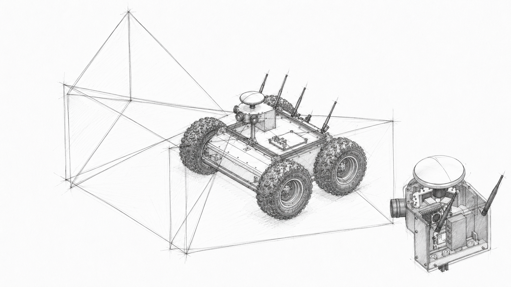

Engineering · 02
Sensor Suite Development
Designed, implemented and validated a low-cost GNSS-synchronized multi-camera perception system for a ROS2-based unmanned ground vehicle, combining embedded hardware, camera calibration and synchronized image acquisition.
Field
Robotics
Period
2026
Focus
Computer vision / Embedded systems / ROS2
Overview
Building a synchronized multi-camera perception system on low-cost embedded hardware.
Autonomous mobile robots depend on spatially and temporally consistent sensor data for localization, mapping, obstacle avoidance and sensor fusion. Industrial perception systems typically achieve this using dedicated synchronization hardware, deterministic communication interfaces and powerful computing platforms.
This project investigated whether synchronized multi-camera perception could instead be implemented using commercially available USB3 cameras, a Raspberry Pi 5 and a modular ROS2-based software architecture.
The resulting sensor suite was designed for integration on the Husarion Panther UGV and provides wide-area visual coverage, GNSS-referenced timing and calibrated image data for future perception and sensor-fusion applications.
Key challenges
Balancing synchronization, calibration and embedded system limitations.
The system had to provide reliable and geometrically consistent multi-camera data while operating within strict cost, bandwidth, processing and mechanical constraints.
- Coordinated acquisition from three USB3 global-shutter cameras
- GNSS-referenced timestamping and synchronization architecture
- Intrinsic and extrinsic calibration with limited field-of-view overlap
- Management of high-bandwidth image streams on a Raspberry Pi 5
- Compact and mechanically stable camera integration
- ROS2 integration and distributed sensor-data publication
- Preparation for future hardware-triggered synchronization
Solution
A modular GNSS-referenced perception platform with synchronized image acquisition.
The developed system integrates three Teledyne FLIR Firefly USB3 global-shutter RGB cameras, a GNSS/RTK receiver and a Raspberry Pi 5 within a compact sensor enclosure mounted on the Husarion Panther UGV.
A custom acquisition framework was implemented in C++ using ROS2 Jazzy and the Teledyne FLIR Spinnaker SDK. It provides deterministic camera management, synchronized frame grouping, timestamp handling, calibration integration and distributed publication of image and GNSS data.
A complete OpenCV-based calibration pipeline using ChArUco targets was developed for intrinsic and extrinsic camera calibration. Experimental validation demonstrated sub-pixel intrinsic calibration accuracy and physically consistent extrinsic calibration results for the evaluated camera configuration.
Under nominal operating conditions, the system achieved stable synchronized acquisition at 30 Hz using full-resolution BayerBG8 image streams, with nearly no timing jitter and no missing synchronized frame sets. The architecture also prepares the required interfaces for future GNSS-triggered hardware synchronization.
Project report
Complete engineering report
Read the complete report covering system architecture, mechanical and electrical integration, ROS2 software, camera calibration, synchronization and experimental validation.

Reflection
What I took from the experience.
This project showed me how strongly synchronization, calibration, mechanical design and computing performance are connected in a robotic perception system. Improving one aspect often introduces new constraints elsewhere, making system-level trade-offs just as important as the performance of individual components.
Developing both the physical sensor suite and its ROS2 acquisition framework strengthened my ability to work across mechanical integration, embedded computing, computer vision and software architecture. It also reinforced the importance of designing systems that can be tested independently, reproduced and extended as requirements evolve.
The validation work highlighted the practical difference between an architecture that works under nominal conditions and one that is fully deterministic. Software-coordinated synchronization provided stable acquisition for the evaluated configuration, but future hardware triggering remains important for guaranteeing simultaneous camera exposure.
The project also demonstrated that low-cost hardware can provide a capable foundation for robotic perception when its limitations are understood and addressed deliberately. Bandwidth, field-of-view overlap, mechanical rigidity and recording overhead all became measurable engineering constraints rather than abstract design considerations.